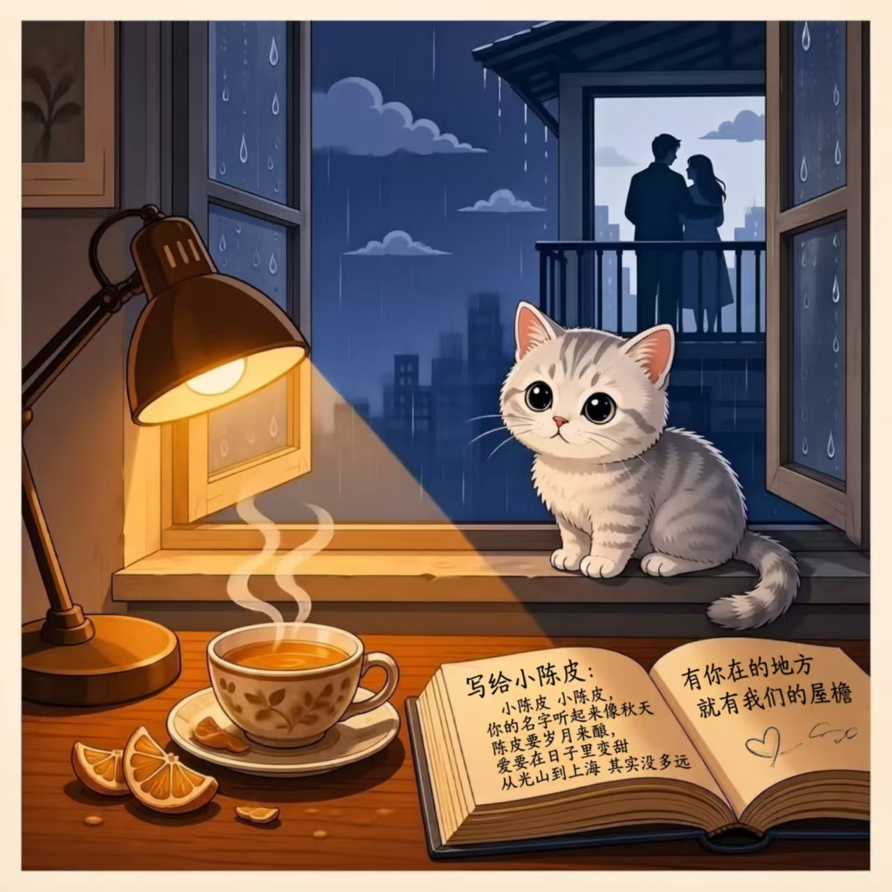

写给小陈皮
写给小陈皮 · 4:12 · 为四周年纪念日而作
0:00 / 4:12
目前只有这一首。夏天的体育馆，还欠彼此的那座山，窗台上睡着的猫，还有从光山到上海的这一路。
作词：Yuanyang、DeepSeek 和 Gemini
制作：Suno

写给小陈皮 · 4:12 · 为四周年纪念日而作
目前只有这一首。夏天的体育馆，还欠彼此的那座山，窗台上睡着的猫，还有从光山到上海的这一路。
作词：Yuanyang、DeepSeek 和 Gemini
制作：Suno
